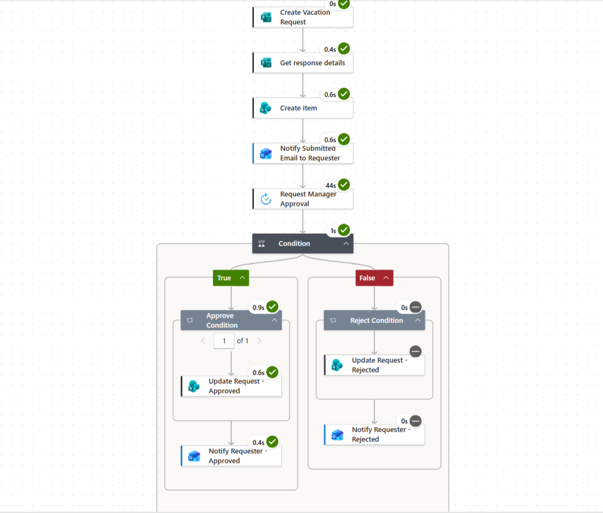

Project Overview
This project automates the employee vacation request process using Microsoft Power Automate. The workflow captures vacation requests, stores request information in SharePoint, sends the request to a manager for approval, and automatically updates the request status based on the approval decision.
The workflow also sends email notifications to the requester when the request is submitted, approved, or rejected, helping reduce manual communication and providing a consistent approval process.
Business Problem
A manual vacation request process can require employees, managers, and administrators to communicate through multiple steps. This can make it difficult to track request status and ensure that employees receive timely updates.
The goal of this project was to create a centralized and automated workflow that manages the request from submission through the final approval or rejection decision.
Solution
A Power Automate workflow was created to automate the complete vacation request approval process.
When an employee submits a vacation request, the workflow retrieves the submitted information, creates a corresponding SharePoint item, and notifies the requester that the request has been submitted.
The request is then sent to the designated manager for approval. A condition determines whether the request is approved or rejected, after which the SharePoint record is updated and the requester receives the appropriate email notification.
Workflow Process
01
Employee submits a vacation request.
02
The submitted response details are retrieved.
03
A new request record is created in SharePoint.
04
The requester receives a submission notification.
05
The request is sent to the manager for approval.
06
A condition evaluates the approval decision.
07
The request is updated as approved or rejected.
08
The requester receives the final notification.
Approval Logic
Approved
When the manager approves the request, the workflow updates the request status to Approved and sends an approval notification to the requester.
Rejected
When the manager rejects the request, the workflow updates the request status to Rejected and sends a rejection notification to the requester.
Skills & Technologies
Project Outcome
The automated workflow provides a structured process for managing vacation requests from submission through the final decision.
By connecting Microsoft Forms, SharePoint, Power Automate, approval actions, and email notifications, the workflow reduces manual follow-up and provides clear status updates to both requesters and managers.
Automate Flow

Interactive Power Automate Workflow
Explore the automated vacation request process
View Workflow on GitHub →